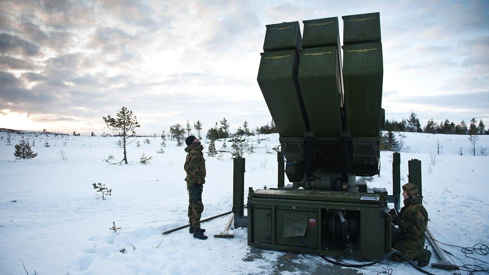

Russian Drones & Missiles Are Finding & Hitting Ukraine’s Best WeaponsRussia’s deep-strike kill-chain continues to inflict painful losses on Ukraine’s hard-to-replace air-defense systems. Two weeks after a Russian drone spotted, and a Russian rocket quickly struck, two of Ukraine’s Patriot surface-to-air missile launchers, the Russians have found and hit a Ukrainian NASAMS SAM battery. A video Russian forces posted on social media on Saturday depicts what appears to be a precision missile strike on a launcher for a Norwegian-designed National Advanced Surface-to-Air Missile System, 30 miles from the front line in Zaporizhzhia Oblast in southern Ukraine. A NASAMS’ AIM-120 missile ranges, you guessed it, 30 miles. It’s the second likely loss of a NASAMS launcher. Prior to Russia-friendly Republicans in the U.S. Congress cutting off aid in October, the United States donated to Ukraine a dozen NASAMS batteries, each with several radars, at least one control station and between nine and a dozen launchers. Ukraine is set to receive—from Canada, Norway and Lithuania—another 15 to 18 NASAMS launchers, so it’s not about to run out. But that doesn’t make the recent strike any less chilling. For two years, the Russians struggled to hit mobile targets more than a few miles from the 600-mile front line of Russia’s 25-month wider war on Ukraine. This spring, that changed. In a bloody month for Ukrainian air-defenders, artillery gunners and aviators, Russian forces have found and destroyed the Patriots, their first-ever High-Mobility Artillery Rocket System and a pair of Mil Mi-17 assault helicopters. In each case, the Ukrainian systems were tens of miles behind the front line, and either on the move or about to move. It should be obvious by now that the Russians’ kill-chain—the networked drones and artillery that allow them to spot targets deep behind the front line and hit them before they move—is getting better, fast. In theory, Russia widened its war on Ukraine 25 months ago with a speedy kill-chain based on various data networks, which fuse targeting data from surveillance drones and other reconnaissance assets with the fire-control systems of artillery batteries. In practice, Russian targeting networks rarely worked as designed—and mostly for human reasons. To put it simply, senior Russian commanders didn’t trust junior Russian commanders to open fire based on new—and fleeting—intelligence. Leaders “are culturally averse to providing those who are executing orders with the context to exercise judgement,” Mykhaylo Zabrodskyi, Jack Watling, Oleksandr Danylyuk and Nick Reynolds explained in a 2022 report for the Royal United Services Institute in London. That began to change last year—and the reforms have accelerated this year. The Russians are deploying more and better surveillance drones passing better data along more robust networks to more front-line artillery and rocket batteries and attack-drone crews. “Russia is using new technology to improve sensor-to-shooter links,” Blair Battersby, a British Army warrant officer, wrote for the U.S. Army’s training command. More to the point, Russian commanders seem to be giving front-line forces more leeway to act on their own. Surveilling deeper, and shooting farther, faster and more accurately, Russian forces are mitigating one of their longstanding disadvantages—and blunting what once was a key Ukrainian advantage. The relative freedom of movement that Russia’s slow targeting afforded Ukrainian forces. It should be painfully obvious to Ukrainian commanders that their troops and equipment no longer are safe within 50 miles of the front line—especially while out in the open during daytime. Sources: 1. Russian defense ministry: https://twitter.com/WarVehicle/status/1771214299999981852 2. Royal United Services Institute: https://static.rusi.org/359-SR-Ukraine-Preliminary-Lessons-Feb-July-2022-web-final.pdf 3. Blair Battersby: https://oe.tradoc.army.mil/2024/01/12/tradoc-russia-addressing-missing-links-in-kill-chain/ 4. Oryx: https://www.oryxspioenkop.com/2022/02/attack-on-europe-documenting-ukrainian.html; https://www.oryxspioenkop.com/2022/04/answering-call-heavy-weaponry-supplied.html |
 |